如果把编程语言比作武器
来自bjorn的一篇吐槽文.
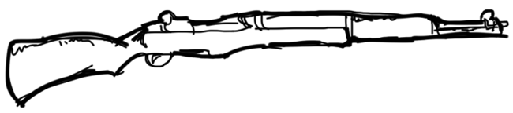
C 是经久不衰的M1半自动来复，虽然有些时日了但稳定压倒一切。

c++ 是威力强大的双截棍，看看李小龙使它的时候那鼓威风劲你就领悟了。但问题是掌握它需要很长段时间，而在这段时间内经常是把自己打得鼻青脸肿而不是敌人。
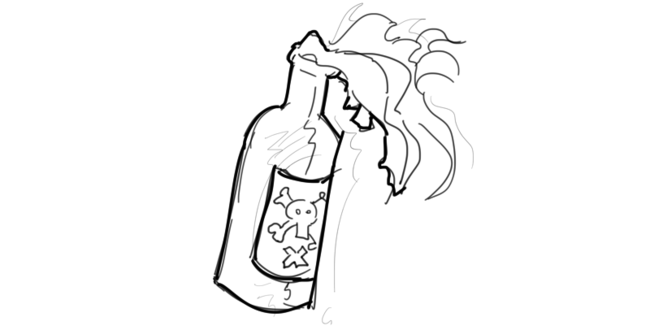
Perl是莫洛托夫鸡尾酒，偶尔会很有用，但现今用的人已少。
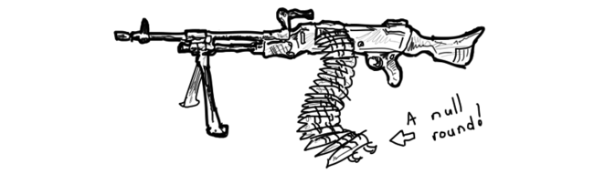
Java是架240发全自动冲锋枪，扫起来爽翻天，前提是弹夹没空。一旦弹夹空了会发生NullPointerException异常，表明这枪就报废了然后你就挂了。
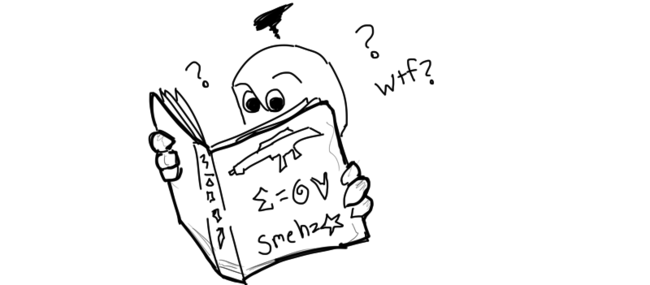
Scala跟Java的冲锋枪没差，唯一的不同是他的使用说明是用你看不懂的方言写成的天书，而且里面大部分都还是在瞎B。
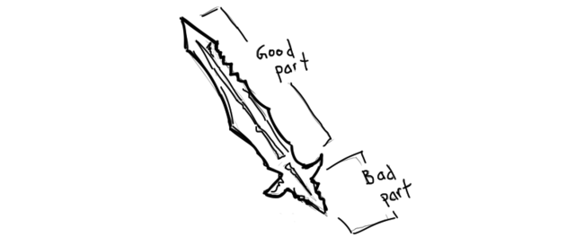
JavaScript是把没有手柄的双刃剑，不多说。
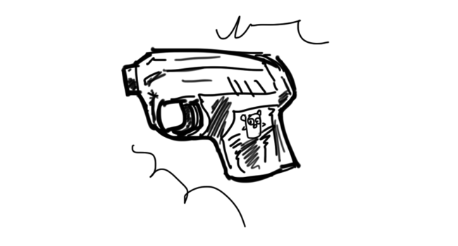
Go 就自制的拥有if err != nil 检查特性的短枪，每次射完你都要执行一次以确定是不是射成功了，并且它只射Tab不射空格。
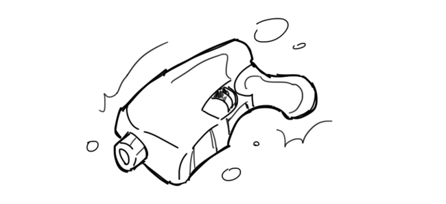
Rust 纯属3D打印的产物，兴许哪天能派上用场。
bash是被下了诅咒的锤子，挥起来的时候全世界都是钉子，包括你自己的手指。
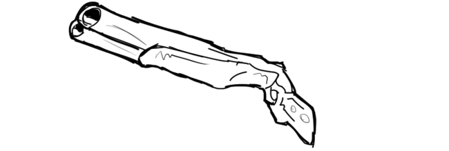
Python是牛逼哄哄的双管枪，但一次只射一管，另一管不知何时射。或许曾经我用过工具来把它启用。
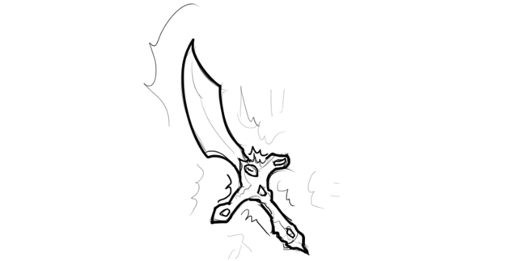
Ruby「红宝石」是把镶嵌了红宝石的宝剑，你使用它的原因正是那闪闪的宝石可以亮瞎众人。
PHP像一根管子，你把一头插入汽车的排气管，然后另一头通过车窗插到车内，再接着你坐进了车里发动了引擎。
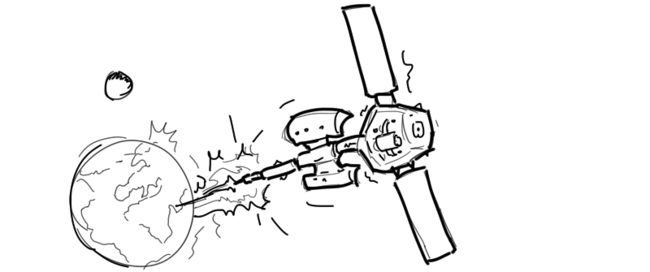
Mathematica 是一个可以发射低轨地球卫星的发射器，非常的华丽与强劲，前提是你也土豪到用得起它。

C#是搭配在一头驴上的激光步枪，效果可想而知。但将它从这头驴上拿下来后，似乎也不能工作。
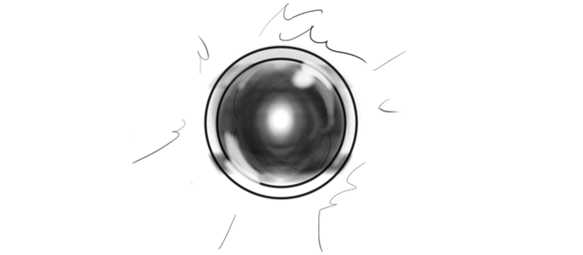
Prolog 是高级的AI智能武器，你告诉他怎么做做哪些，但最后他还会多生成一些终结者把制造他的人干掉。
Lisp 精巧如剃刀，使用者往往非常疯狂且危险。